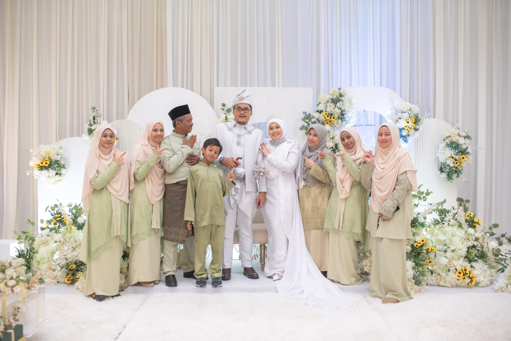

Home
Biodata
Pencapaian
Pendidikan
Keluarga
Galeri
Contact Me

IBU
WAN ROSILAWATI BINTI WAN AHMAD
AYAH
ANUAR BIN JUSOH
Adik Beradik
Nor Syahidah Binti Anuar(sulong)
Nor Syahirah Binti Anuar (Kakak Kedua)
Nurul Alis Binti Anuar (Kakak Ketiga)
Farisha Batrisyia Binti Anuar (Adik Perempuan)
Muhammad Fathullah Bin Anuar (Adik lelaki)